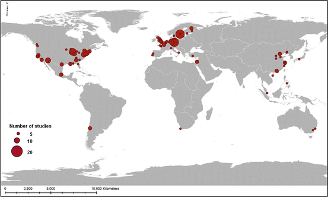

33.1 Introduction
We are entering a new urban era in which the ecology of the planet as a whole is increasingly influenced by human activities (Turner et al. 1990; Ellis 2011; Steffen et al. 2011a, b; Folke et al. 2011). Cities have become a central nexus of the relationship between people and nature, both as crucial centres of demand of ecosystem services, and as sources of environmental impacts. Approximately 60 % of the urban land present in 2030 is forecast to be built in the period 2000–2030 (Chap. 21). Urbanization therefore presents challenges but also opportunities. In the next two to three decades, we have unprecedented chances to vastly improve global sustainability through designing systems for increased resource efficiency, as well as through exploring how cities can be responsible stewards of biodiversity and ecosystem services, both within and beyond city boundaries.
A social-technological approach has, up until now, been a traditional way of analyzing urban complexity (e.g., Geels 2011; Hodson and Marvin 2010), and in this context many have struggled to define exactly what is meant by a city. In this volume, we have expanded on an emerging framework of cities as complex social-ecological systems, since cities include much more than a particular density of people or area covered by human-made structures. A social-technological approach will continue to be important in the urban sustainability discourse. However, an urban social-ecological approach (Berkes and Folke 1998) will be increasingly necessary to succeed in enhancing human well-being in urban areas in the face of new and complex challenges such as climate change (Ernstson et al. 2010a; Chelleri and Olazabal 2012), migration (Seto 2005), and shifting and globalized economic investment (Childers et al. 2013). Furthermore, the research and application of urban sustainability principles have until now rarely been applied beyond city boundaries and are often constrained to either single or narrowly defined issues (e.g., population, climate, energy, water) (Marcotullio and McGranahan 2007; Seitzinger et al. 2012) (Chap. 27). Although local governments often aim to optimize resource use in cities, increase efficiency, and minimize waste, cities can never become fully self-sufficient. Therefore, individual cities cannot be considered “sustainable” without acknowledging and accounting for their dependence on ecosystems, resources and populations from other regions around the world (Folke et al. 1997; McGranahan and Satterthwaite 2003; Seitzinger et al. 2012). Consequently, there is a need to revisit the concept of sustainability, as its narrow definition and application may not only be insufficient but can also result in unintended consequences, such as the “lock-in” of undesirable urban development trajectories (Ernstson et al. 2010a). We suggest that an appropriate conceptualization of urban sustainability is one that incorporates a complex social-ecological systems perspective of urban areas and their global hinterlands, and one that recognizes that urban areas are embedded in, and are significant parts of, the operation of the biosphere. The focus is not just on sustainability goals or aspirations, but also on resilience and transformations as components of the urbanization process.
As human dominance of ecosystems spread across the globe, humankind must become more proactive not only in trying to preserve components of earlier ecosystems and services that they displace, but also in imagining and building whole new kinds of ecosystems that allow for a reconciliation between human development and biodiversity. Populations and assemblages of species that evolve under urban conditions may well represent what holds for much of Earth’s terrestrial biodiversity in the future.
We hope this book stimulates a continued debate and knowledge generation about beneficial and necessary responses to urbanization, as well as provides support for a process that moves from knowledge to action. In this chapter we will: (1) summarize the main insights from the preceding chapters of the book; (2) outline current gaps in knowledge; and (3) discuss local, regional, and global strategies and actions for the urbanization process to become more sustainable, and; (4) a new framework for increasing our understanding of urbanization, sustainability, resilience, and transformation.
33.2 Summary: Global Urbanization and Impacts on Biodiversity and Ecosystem Services
33.2.1 Urban Trends
If current trends continue, by 2050 the global urban population is estimated to be 6.3 billion, up from the 3.5 billion urban dwellers worldwide in 2010 (Chap. 21). This is likely to have major impacts on biodiversity and ecosystem services (Chap. 22). We have, in this context, identified five trends in the global urbanization process (Chap. 1):
1.
Urban areas are expanding faster than urban populations (Chap. 21). If current trends continue, between 2000 and 2030 urban land cover is expected to triple, while urban populations are expected to nearly double. Most of the growth is expected to happen in small and medium-sized cities, not in megacities.
2.
Urban areas modify their local and regional climate through the urban heat island effect and by altering precipitation patterns, which together will have significant impacts on local and regional net primary production, biodiversity and ecosystem functions (Chap. 25).
3.
4.
5.
Future urban expansion will mainly occur in regions of limited economic and institutional capacity, which will constrain management of biodiversity and ecosystem services. Half the increase in urban land across the world over the next 20 years will occur in Asia, with the most extensive patterns of change expected to take place in India and China (Chaps. 4, 21, 22 and 27).
All these projections, however, have uncertainties and are susceptible to several factors or events—for example, a deep and protracted world economic crisis, accelerating fossil-fuel prices, or a global pandemic—that could considerably decrease the projected rate of global urbanization. On the other hand, successful development of alternative energy sources might enhance urbanization processes and growth rates. Furthermore, mapping physical expansion of urban areas is not sufficient to calculate the full range of effects of urbanization on biodiversity, ecosystem services and human well-being. There are many indirect effects of urbanization due to the resource demands of residential, commercial, and industrial activities in urban areas that need to be considered. Urbanization also transforms consumption patterns, as well as alters how people value biodiversity and the social norms related to its sustainable use. Land-use change models that better reflect the complexity, diversity, and intensity of human influence on land systems and the feedback mechanisms are needed to more completely account for these effects (Cadenasso et al. 2007; Seto et al. 2010) (Chap. 22, see also Sect. 33.4).
33.2.2 Urbanization and Global Trends in Biodiversity
Urbanization impacts biodiversity both directly and indirectly. Direct impacts primarily consist of habitat loss and transformation through physical expansion of urban areas. Indirect impacts include changes in water and nutrients, increased colonization by introduced species as urban areas expand (Pickett and Cadenasso 2009) and the auxiliary effects of land use and human behaviors within urban space (Clergeau et al. 2006; Szlavecz et al. 2011; Lepczyk and Warren 2012).
The most obvious direct impact of urbanization on biodiversity is the land cover change due to the growth of urban areas. Although urban areas cover less than 3 % of the Earth’s surface, the location and spatial pattern of urban areas have a significant impact on biodiversity:
1.
Cities have historically been concentrated along coastlines and some islands as well as on major river systems, which also are areas of high species richness and endemism. The spatial correlation between urban growth and endemism means that urban growth already has significantly impacted biodiversity (Chaps. 2, 3, 9, 10 and 23).
2.
Urban expansion is now occurring faster in low-elevation, biodiversity-rich coastal zones than in other areas (Chap. 22). While the majority of terrestrial ecoregions are currently less than 1 % urbanized, about 10 % of terrestrial vertebrates are in ecoregions along coasts and on islands that are heavily impacted by urbanization (Chaps. 3 and 22). More than 25 % of all endangered or critically endangered species will be affected to varying degrees from urban expansion by 2030. This will be most pronounced in coastal areas and islands where endemism tends to be particularly high (Chap. 22).
3.
The urban land cover in biodiversity hotspots around the world is expected to increase by more than 200 % between 2000 and 2030 with substantial variations in the rate and amount of increase across individual hotspots. The hotspots in South and Central America as well as in Southeast Asia will experience both high rates and high amounts of urban expansion by 2030 (Chaps. 22, 4 and 28).
4.
Urban population expansion is also significant in tropical dry and moist forests, deserts and tropical grasslands. However, the largest increases in terms of urban population per habitat area will be in mangrove habitats, flooded grasslands, and temperate broadleaf forests (Chap. 22).
5.
Urban expansion will significantly impact freshwater biodiversity on a global scale. Freshwater biodiversity impacts will be largest in places with large urban water demands relative to water availability as well as high freshwater endemism. Of particular conservation concern is the Western Ghats of India, which will have 81 million people with insufficient access to water by 2050, but is also a region with 293 fish species, 29 % of which are endemic to the ecoregion (Chap. 22).
6.
More than 25 % of the world’s terrestrial protected areas are within 50 km of a city (Chap. 3). This close proximity will have multiple effects on these protected areas, and signifies a need for urban residents and local governments to explore how to co-exist with protected areas. However, close proximity between urban populations and protected areas can have positive outcomes, such as increased potential for recreational activities and nature-based education. Urban land expansion is likely to take place near protected land at approximately the same rate as elsewhere (Chap. 22). Being near a protected area does not necessarily slow, and can in fact accelerate, the rate of urban land conversion. Taken together, these results imply that due to impacts of continuing urbanization, alteration of ecosystem function of protected areas is taking place in most of the world’s urban regions (Laband et al. 2012). Establishing management practices such as biodiversity corridors in regions with high likelihood of becoming urban is desirable, but will require coordinated efforts among administrative bodies within and among nations. Such corridors may take on additional significance considering the migration of species in response to shifts in their ranges with climate change (Forman 2008) (Chap. 25).
33.2.3 Biodiversity in Urban Areas
Since cities represent a complex, interlinked system shaped by the dynamic interactions between ecological and social systems, preserving and managing urban biodiversity means going well beyond the traditional conservation approaches of protecting and restoring what are often considered “natural ecosystems.” Indeed, there is an imperative to infuse or mimic such elements in the design of urban spaces. Although the basic ecological patterns and processes (e.g., predation, decomposition) are the same in cities and more natural areas, urban ecosystems possess features that distinguish them from other non-urban ecosystems (Niemelä 1999) (Chaps. 10 and 11). Such ecological features include the extreme patchiness of urban ecosystems, prevalence of introduced species, and the high degree of disturbances in urban settings. Which species occur in any given urban area depends upon two factors: the extent to which the urban habitats support native species (i.e., the strength of the urban biotic filter) (Williams et al. 2009), and the introduction of non-native species. Introduction of non-native invasive species may lead not only to the loss of “sensitive” species dependent on larger, more natural blocks of habitat but also to the establishment of “cosmopolitan” species, i.e., generalists that are present in most cities around the world (Chaps. 10 and 28). The net result is sometimes called “biotic homogenization”. The flora and fauna of the world’s cities indeed become more similar and homogeneous over time but there is evidence that the proportion of native species remains high in spite of this (Pickett et al. 2011). A recent global analysis of urban plant and bird diversity found that urban areas filter out or exclude about a third of the native species of their surrounding region on average (Chap. 10). While this loss of diversity is worrying, it is worth noting that two-thirds of the native plant and bird species continue to occur in urban areas that are not designed with biodiversity protection in mind (although their population sizes and distribution ranges may be impacted by urbanization). In some cases, urban areas may host cultural and biodiversity-rich green spaces that serve as remnants of biodiversity of the broader landscape and region, especially if the surrounding landscapes have been simplified through agriculture or forestry (Barthel et al. 2005). Novel plant and animal communities are continuously assembled in urban areas, often with active manipulation and management by human society. These communities can play an important role in the generation and maintenance of ecosystem services within the urban area, as well as for surrounding habitats. Biodiversity-conscious urban design therefore has the potential to support a larger proportion of functional biodiversity within urban landscapes, as well as to maintain the density, structure and distribution of the plant and animal communities (Pickett et al. 2013b).
33.2.4 Urbanization and Ecosystem Services
Urban areas affect many ecosystem services on scales ranging from local to global (Chap. 11). One of the most critical services on a regional to global scale is the provision of freshwater (for details on local urban ecosystem services, see Chap. 11). Urban areas depend on freshwater availability for residential, industrial, and commercial purposes; yet, they also affect the quality and amount of freshwater available to them. Water availability is likely to be a serious problem in most cities in semiarid and arid climates. More than a fifth of urban dwellers, some 523 million, live in climates that would at least be classified as semiarid. Moreover, currently 150 million people live in cities with perennial water shortage, defined as having less than 100 L/person/day of sustainable surface and groundwater flow within their urban extent. By 2050, population growth will increase this number to almost a billion people. Furthermore, climate change is projected to cause water shortage for an additional 100 million urbanites (Chap. 3). Globally, urban areas and the resources consumed by urban inhabitants, are responsible for somewhere between 40 and 71 % of all anthropogenic greenhouse gas (GHG) emissions. The majority of global urban GHG emissions are from cities in the developed world. Within cities, energy service production accounts for the largest share of GHG emissions. A large percentage of GHG emissions are those from the largest cities (mega-cities). While there are smaller urban areas that have high per-capita emissions, these centers account for a much lower share of total emissions (Chap. 25).
General trends in the provisioning of more local urban ecosystem services are difficult to assess, but with current types of urban development they are likely to decrease on most continents (Chaps. 21 and 22). The picture is, however, complex; while in many places in Europe a tendency to move to more compact city development may reduce the area of green space, in other places shrinking cities free up space for establishment of new green areas (Chap. 12). Also, ecological restoration of old industrial areas and brown fields, and investment in green infrastructure is on the rise in both Europe and North America (Chap. 31).
While global-scale analyses and projections of the effects of urbanization on biodiversity and ecosystem services are valuable for exposing broad trends, studies at the regional and country scales may allow for additional depth and insight about more local processes. However, such regional and country-level studies are sparse. In a study of 25 EU countries (Chap. 22), average biodiversity appears to decline in almost all countries and all future development scenarios, with exceptions for Germany, Latvia, Estonia, and Malta. Most of the decline is due to urbanization, increase in nitrogen deposition, and disturbance in densely populated areas. Projected urbanization in Britain from 2006 to 2016 and effects on ecosystem services such as freshwater flood mitigation services, carbon storage, and agricultural production suggest that the way ecosystem services will be impacted depends largely upon the patterns of urbanization. There are complex trade-offs between densification and sprawl scenarios. Under the densification scenario, much less land becomes urban which limits the impacts on carbon storage and agricultural production. However, at the same time, more people would be affected by fluvial flooding. Collectively, the findings of these studies suggest the need for policies that consider urban growth at local as well as regional and global scales.
33.3 Gaps in Knowledge
In this section we will address some of the important knowledge gaps that have emerged from the analyses in various chapters of this book.
33.3.1 Gaps in Our Modeling of Global Urban Dynamics
Even though research has advanced considerably in the field of modeling global dynamics (Harris 1985; Wegener 1994; Wilson 1998; Agarwal et al. 2002; Batty et al. 2004), the traditional modeling of urban dynamics is still faced with significant challenges (Chaps. 21 and 22). We still fail to fully grasp the trajectories of urban systems, the planetary scale of impacts of urbanization, social-ecological feedbacks, and the ways through which changes in global environment will affect the urbanization process itself. General land-use change models began in the 1950s and were concerned primarily with local areas or regions, and the majority of the research conducted in this field remains a narrowly focused activity within specific urban regions. It was not until 2011 that the first global models of urban land-use change emerged, providing a fuller picture of global urbanization patterns (Chap. 21). There are still today very few models that adequately capture the coupled dynamics of social-ecological systems, and address important feedback loops and non-linearities in the systems.
A key feature to address in the integration of human and natural systems arises from the fact that we are faced with feedback loops between cities and the global environment (Sánchez-Rodríguez et al. 2005). These feedback loops occur in a parallel, simultaneous fashion: while urban systems and processes have an effect on local environments on a massive scale (leading to global environmental change), changes in the global environment (through a variety of natural cycles) affect urban areas differentially. Furthermore, responses (within and around urban areas) to global environmental changes eventually impact urbanization processes themselves. Models that only partially address components of this wider feedback loop are destined to capture an incomplete picture of a coupled natural-human system and will be limited in their capacity to project urban futures.
For example, while many models today address the impacts of urbanization (in terms of size, form and function) on climate change and biodiversity loss, very few models (if any) attempt to close the feedback loop by addressing the effects of changes in ecological systems on the urban system. Our most heavily utilized urban dynamics models are not currently designed to address fundamental questions regarding how humans can and will adjust their behavior through expectations about future risks and impacts related to climate change and biodiversity loss (e.g., Tidball and Stedman 2013). This lack of understanding adversely affects our capacity to realistically project change in urban systems; the vast majority of existing models ignore this dimension of the urban-environment feedback loop, thus assuming that urban populations do not respond with actions to new information about expected or actual impacts of environmental change. Typically, urban growth models will make projections about future urban population growth, physical expansion or GDP growth without paying attention to information about unintended costs, and risks and uncertainties that arise from projected environmental change. This is a significant paradox, especially in cases where a model employed is an integrated model, focusing on some of the connections between social and ecological systems. Unless we develop integrated models that address multiple scales of interactions and responses, non-linear trajectories, thresholds, the importance of economic agency, and the role of incentives and prices (among other factors important for system dynamics), our capacity to fully explain and realistically project how climate change and biodiversity loss will eventually affect urban growth, form, and function globally will remain extremely limited. The lack of such capacity is primarily due to conceptual and methodological challenges involved in creating integrated models of social and ecological systems (Holling 1993) but it is not insurmountable. A new generation of dynamic models, emerging from promising studies that offer ways to overcome the challenge of full integration (Alberti and Waddell 2000; Güneralp and Seto 2008; Haase and Schwarz 2009; Wilson 2010; Zhang et al. 2010), lies at the forefront of research on urbanization and biodiversity.
33.3.2 Knowledge Gaps Related to Biodiversity and Ecosystem Services
As indicated by the chapters in this book, there is no scarcity of research questions related to urbanization and its relationship to biodiversity and ecosystem services. Alongside challenges of understanding and forecasting patterns of land-use change and urbanization, there are also gaps in knowledge regarding many aspects of biodiversity and ecosystem services, such as connections between various ecosystem processes across spatial and temporal scales (Colding 2007; Niemelä 2013). The interactions between urban and rural regions (Larondelle and Haase 2013) and feedback mechanisms among ecosystem processes within and near cities are still poorly understood, as is the impact of urbanization on values, norms and institutions related to the consumption and/or sustainable use of biodiversity and ecosystem services. Furthermore, a major driver of change that likely will affect urban biodiversity and ecosystem services is climate change (Chap. 25). The broad questions integrating natural and social sciences in studying the effects of climate change on urban ecosystems, and the way these changes impact people’s well-being, were identified by James et al. (2009) as requiring urgent research attention addressed through interdisciplinary collaboration between ecologists, geographers, urban scholars, social scientists, economists, together with urban land-use planners and conservation practitioners (Niemelä et al. 2011).
With respect to ecosystem services, we have identified several specific knowledge gaps:
- Supply-demand gap: An increasing body of knowledge exists on the provisioning of ecosystem services at many different scales, but there is little information on needs and demands of ecosystem services in cities. In particular, we know little about the negotiated interactions that lead to trade-offs and synergies in the demand for particular bundles of ecosystem services accessed by different socio-economic or livelihood groups in urban environments (but see Colding et al. 2006; Andersson et al. 2007). This will play a major role in impacting outcomes of equity, particularly for the urban poor as well as for traditional livelihood users, such as fishers and livestock grazers in peri-urban areas (D’Souza and Nagendra 2011). When focusing on demands placed upon ecosystem services, we are in need of interdisciplinary approaches (see James et al. 2009; Niemelä et al. 2011; Kabisch and Haase 2012).
- Geographical gap: There is a geographical gap in knowledge—most scientific studies of ecosystem services in cities are carried out and published in Europe, North America and China (Fig. 33.1, Haase et al. 2014) (Chap. 27). Thus, judging from what is available in the peer reviewed literature, we have a poor understanding of the supply, needs and management of urban ecosystem services in large regions in South Asia, Africa and Latin America, which critically are those areas that are developing most rapidly and face some of the greatest threats to protected areas and biodiversity hotspots in their boundaries (Chaps. 4, 21, 22, 23 and 28). For example, the novel structures and human fluxes associated with urbanization in Africa are especially under-studied (McHale et al. 2013). This gap is also reflected in the local assessments in this book, where Cape Town is the only African city represented (Chap. 24). However, this does not necessarily mean that local knowledge is non-existent. Most likely there is much ecological knowledge at the local level being used everyday in more informal management of urban ecosystems. Indeed, this is known to be the case in many places in Asia and Africa. For instance, comparisons of residential gardens in different continents indicate that most plant species in home gardens in Europe and North America are chosen for their ornamental value, while in contrast a large proportion of species in gardens in India and South Africa are chosen for their medicinal, food or cultural properties (Jaganmohan et al. 2012) (Chap. 7). Local knowledge and practices could be mobilized in multiple ways through,for example, citizen science initiatives (Chaps. 18, 29, 30 and 32), and thus could support more formal governance and management of urban ecosystem services.
- Valuation gap: Many tools for monetary valuation of ecosystem services are already available, but these need to be complemented with non-monetary valuation methods and with planning tools based on multiple criteria (Chap. 11) (Gomez-Baggethun and Barton 2013). The total value of multiple services generated by ecosystems can be divided into different parts, depending on whether or not there is a market for the service and whether the value can be expressed in monetary or only in non-monetary terms. Ecosystem service science still lacks a robust theoretical framework that allows for consideration of social and cultural values of urban ecosystems on an equal basis with monetary values in decision-making processes. Developing such a framework involves synthesizing the large but scattered body of literature that has dealt with non-monetary values of the environment, and articulating this research into ecosystem service concepts, methods, and classifications. (Chan et al. 2012; Luck et al. 2012)
- Insurance value gap: We are in particular need of new valuation techniques that utilize a resilience and inclusive wealth perspective to better capture the value of biodiversity and ecosystems in reducing urban vulnerability to shocks and disturbances (Sect. 33.4). The insurance value of an ecosystem is closely related to its resilience and self-organizing capacity, and to what extent it may continue to provide flows of ecosystem service benefits with stability over a range of variable environmental conditions. The economic approaches to insurance values are still poorly developed (Pascual et al. 2010).
- Cultural value gap: While much attention has been focused on provisioning and regulating ecosystem services provided by urban ecosystems, cultural services have been poorly researched (e.g., Daniel et al. 2012). While such services may not be apparent in a global synthesis, they can play an extremely important role in place-based conceptualizations of urban ecosystem services, for instance, on continents like Asia and Africa, where many sacred conceptualizations of nature persist in cities (e.g., protection of sacred keystone species such as Ficus religiosa across cities in India (Chaps. 6 and 7)). There are numerous equity and environmental justice issues related to cultural ecosystem services, but these are often poorly documented (Alfsen et al. 2010; D’Souza and Nagendra 2011). Also lacking is careful articulation and analysis of urban land ethics (Boone et al. 2013) that might link with evolving conservation and cultural landscape ethics (Rozzi 2012).
Overall, a research agenda covering the above issues could assist in pinpointing where more understanding is needed for supporting urban sustainability and resilience. An ecosystem services and social-ecological approach to urban sustainability and resilience, could form a central and unifying approach (Niemelä et al. 2011), and will be discussed in the last section of this chapter.

Fig. 33.1
The distribution of 217 urban ecosystem services case studies appearing in peer-reviewed literature during the period 2000–2012 (Reproduced from Haase et al. 2014, submitted. Published with kind permission of © Dagmar Haase 2014. All Rights Reserved)
33.3.3 Knowledge Gaps Related to Governance
Despite its relative youth, the field of urban biodiversity and ecosystem services research has generated a good deal of peer-reviewed material on issues that are explicitly linked to questions of urban governance (Chap. 27). However, knowledge gaps on governance issues are large and it is particularly challenging for a global analysis that the scientific literature on urban ecosystem governance is biased towards some parts of the world and largely missing from Africa, Latin America and parts of Asia (reflected in Fig. 33.1) (Chaps. 23 and 28). Furthermore, ecosystem services governance is extremely complex since the environmental agenda of cities is intertwined with a number of issues and competing priorities, as well as multiple temporal and spatial scales of ecosystem processes and their relation to multiple influencing and impacted actors (Sendstad 2012). Several studies indicate that public institutions have a lack of cooperation across departments or levels of authority, and have an inadequate capacity to handle diverse information and deal with change to respond to environmental problems (Alfsen-Norodom et al. 2004; Blaine et al. 2006; Andersson et al. 2007; Ernstson et al. 2010b). Strategies and regulations tend typically to focus only on a few ecosystem services at the local scale (Ernstson et al. 2010b), assume stability in their supply (Asikainen and Jokinen 2009), and show a lack of provisions connecting urban consumers of ecosystem services and the people managing the services that the urban consumers depend on, originating from outside the city boundaries (Blaine et al. 2006; Puppim de Oliveira et al. 2011). There may often be a mismatch between scales of ecosystem processes on the one hand, and scales of management on the other (Borgström et al. 2006). Multi-level governance can be critical to address issues of sustainable urban ecosystem management, taking into consideration the entire range of spatial and temporal scales that impact resilience, but the importance of such approaches has been insufficiently recognized.
Although studies are emerging that describe how institutions can be formed to connect stakeholders managing, impacting and depending on certain ecosystems and their services (e.g., Colding et al. 2006; Ernstson et al. 2010a, b; Barthel et al. 2010), such studies are scarce and there are few measures that have been implemented or tested. Similarly, there are several studies recognizing cities as having a global impact on ecosystem services provision (e.g., Hagerman 2007; Hutton 2011), but few have investigated policy mechanisms connecting multiple cities and ecosystems at the global level (Sendstad 2012; but see Folke et al. 1997; Wackernagel et al. 2006).
33.4 Local Action and Policy for Urban Biodiversity and Ecosystem Services
In the first publication of the Cities and Biodiversity Outlook (CBO) project, the Cities and Biodiversity Outlook – Action and Policy (CBO A&P, see Preface), the main message was that urbanization and biodiversity challenges will require improved governance responses across multiple scales. Particularly at the city level, a lack of financial and human resources, as well as technical capacity, can prevent issues on biodiversity and ecosystem services from being recognized or addressed. This was also illustrated by a range of examples from cities around the world, and has been further discussed in the more extensive local and regional assessments in this book. The CBO A&P is organized around ten Key Messages, of which number one sets the framework of challenges and opportunities, and the remaining nine explore the opportunities inherent in urbanization:
1.
Urbanization is both a challenge and an opportunity to manage ecosystem services globally.
2.
Rich biodiversity can exist in cities.
3.
Biodiversity and ecosystem services are critical natural capital.
4.
Maintaining functioning urban ecosystems can significantly enhance human health and well-being.
5.
Urban ecosystem services and biodiversity can help contribute to climate-change mitigation and adaptation.
6.
Increasing the biodiversity of urban food systems can enhance food and nutrition security.
7.
Ecosystem services must be integrated in urban policy and planning.
8.
Successful management of biodiversity and ecosystem services must be based on multi-scale, multi-sectoral, and multi-stakeholder involvement.
9.
Cities offer unique opportunities for learning and education about a resilient and sustainable future.
10.
Cities have a large potential to generate innovations and governance tools and therefore can—and must—take the lead in sustainable development.
The implementation of many of these key messages will depend on governance efforts characterized by collaboration of multiple jurisdictions as well as involvement of stakeholders to address the multiple drivers of biodiversity loss. Some approaches to implementation and successful examples of collaborations are presented in, amongst others, the local assessments of New York, Bangalore, Cape Town and Stockholm (Chaps. 19, 7, 24 and 17). Research on planning emphasizes the importance of assessment and valuation of a broad spectrum of urban ecosystem services. However, while such evaluations are useful for measuring progress towards sustainability, they rarely motivate or support the innovations required to provide ecosystem services as an intentional part of urban planning (Ahern et al. 2013). As the local assessments of Shanghai and Istanbul (Chaps. 9 and 16) highlight, there is a dichotomy between (a) knowledge on the importance of services provided by urban ecosystems for the cities (and assessments as tools for safeguarding the ecosystems), and (b) the actual urban development trajectory with its associated impacts on the ecosystems. In this context, urbanization and development of new urban infrastructure represent a unique opportunity for “learning-by-doing.” Although advances in urban sustainability have been made through transdisciplinary collaborations among researchers, professionals, decision-makers and other stakeholders, these advances have limited transferability due to the uniqueness of the city in which they originated. The promise of practicing “learning-by-doing,” therefore, is not yet fully integrated with urban development. Ahern et al. (2013) propose a model for “safe to fail” adaptive urban design to provide a framework to integrate science, professional practice, and stakeholder participation. The framework includes experimental design guidelines, and monitoring and assessment protocols for realizing urban ecosystem services integral with urban development.
Cooperation is important in order to synchronize and to harmonize actions “vertically” (i.e., at international, national, sub-national, and local levels) and “horizontally” (e.g., across divisions such as environment, planning, transportation, education, finance and nutrition). As the broad scope of local assessments in this book shows, there is significant diversity in the way local governments in different countries can approach vertical and horizontal governance of biodiversity and ecosystem services. The local assessment of Istanbul (Chap. 16) shows how tools for policy-makers and planners to assess and value urban ecosystems hold the potential to increase focus on ecosystems in urban planning. The local assessment of Chicago (Chap. 18) presents the initiative of Chicago Wilderness, an organization in which researchers, policy-makers and the public alike participate in restoring and conserving nature in the region. The local assessment of Stockholm (Chap. 17) highlights parallel but largely separate management practices in support of urban ecosystems in the city, such as conservation of the city’s green wedges in municipal planning, and the active maintenance of allotment gardens by private initiatives. Federally-managed governments such as that in the UK decentralize many of the mandates on biodiversity governance to their national and sub-national authorities, and these in turn commission much of the implementation at lower government levels. This is also the case in Germany and Canada. Other nations, such as Japan, South Africa, Switzerland, Mexico, and Brazil, provide guidelines for biodiversity governance and encourage their sub-national and local governments to develop strategies and action plans in line with their national ones. For example, the assessment of satoyama and satoumi landscapes (Chap. 8) discusses how pressure is increasing on local urban policies to actively support adaptation of traditional management systems and landscapes to the urban environment, as the rapid influx of people to urban areas causes ecosystem productivity in the surrounding rural areas to decrease.
As many of the solutions to global concerns such as biodiversity emerge at the local level, we need local and global efforts to create the capacity to innovate locally and diffuse those innovations globally. As the local assessments of Bangalore and Chicago (Chaps. 7 and 18) highlight, local groups have to be able to adopt the best solutions for their local needs, absorb new practices, and create the institutional mechanisms to support these efforts. New governance structures for land management of biodiversity have emerged that do not rely solely on traditional market and government interventions, but on other institutional arrangements. Local citizens often make these arrangements themselves, which involve private, common, and public land to protect ecosystem services that cannot always be assessed by monetary values. The local assessment of Rio de Janeiro (Chap. 29) found that in the case study area where people were predominantly low-income earners, they had great knowledge of the local biodiversity, and actively managed the local urban greens in their neighborhoods by maintaining native plants that could be used, for example, as food. However, the settlements were often informal, and the people were thus vulnerable to changes in the official planning of the area. These are governance mechanisms that can provide new forms of thinking about spatial planning and interventions from different perspectives. They are particularly useful for understanding the role of different actors. They can also address concerns that local populations may be losing control of their landscape to higher levels of governance. Empowering local people is one step toward finding sustainable solutions to manage resources. However, as important as it is to build the capacity of local communities to define their own challenges and means to implement solutions, it should be recognized that emergent governance such as this may not always direct the community along pathways deemed desirable by the broader community of scholars, planners, and resilient theorists. The key is to incorporate positive normative values into the capacity-building exercises and incorporate safeguards against pathways leading to undesirable states (Wiek et al. 2012).
33.5 A Global Framework for Urbanization, Sustainability, Resilience and Transformation
33.5.1 The Need for a New Framework
In spite of the remarkable progress made in urban ecosystem studies over the last few decades, dynamic interactions and resilience of ecosystem functions in these social-ecological systems are still poorly understood (Andersson 2006; Alberti 2010). Sustainability and resilience in urban systems require a new framework that explicitly addresses the question of scale and the multiple-scale interactions, feedbacks, tradeoffs, and synergies between specific and general resilience (Cumming et al. 2013). The challenge to advancing our understanding of coupled urban dynamics is to integrate diverse scientific approaches and knowledge domains grounded in multiple epistemologies, but engaged with the sustainability challenge. Sustainability science serves as an inspiring arena for such integration.
Sustainability science is a field defined by the problems it addresses rather than by the disciplines it employs; it focuses on improving society’s capacity to use the earth in ways that simultaneously meet the needs of a much larger (but stabilizing) human population, sustain the life support systems of the planet, and substantially reduce hunger and poverty (PNAS 2007). Resilience thinking is part of sustainability science, and has two central foci: one is strengthening the current social-ecological system to live with change by enhancing the ability to adapt to potential external pressures in order to retain its essential functions and identity; the other is the ability to shift development pathways from those that are less desirable and/or unsustainable, to ones that are more desirable and/or sustainable—also referred to as transformability (Walker et al. 2004; Folke et al. 2010).
The complexity of urban coupled human-natural systems or social-ecological systems poses enormous challenges in identifying causal mechanisms because of the many confounding variables that exist. At the same time, scientific findings from empirical studies are difficult to generalize due to variation in socio-economic and biophysical contexts, and the great heterogeneity that characterizes urban regions (Grimm et al. 2008). Key challenges are scale mismatches, cross-scale interactions, and limited transferability across scales (Cumming et al. 2013). Furthermore, limited predictability of system behavior over the long term requires a new consideration of uncertainty (Polasky et al. 2011).
Special attention will also need to be given to the translation of the emerging knowledge in urban practice and governance through sustainability and resilience planning. While planning theory thus far has paid surprisingly little attention to human-nature relations (Wilkinson 2012a), planning practitioners see insights from resilience thinking as providing a new language and metaphors for the dynamics of change, and new tools and methods for analysis and synthesis. Furthermore, a resilience approach confronts modes of governance based on assumptions of predictability and controllability (Wilkinson 2012b) with a mode based on dynamics and non-linearity. This is an emerging field in which new, innovative means of planning that deal with urban complexity and sustaining urban ecosystem services are needed. However, resilience thinking and social-ecological theory provide planning with little guidance in prioritizing or addressing tradeoffs between different strategies; this highlights the inherently political character of urban governance (Wilkinson 2012a, b).
What actually constitutes urban sustainability—particularly in relation to various spatial scales—needs rethinking, but so do the concepts of resilience and transformations (Folke et al. 2002; Childers et al. 2013; Westley et al. 2011; Pickett et al. 2013a). In this part of the chapter, we will explore these concepts and also address some misconceptions. In general, both the sustainability and the resilience concepts (particularly general resilience, see below and Table 33.1) are not easily applicable to the city scale. Cities are centers of production and consumption, and urban inhabitants are reliant on resources and ecosystem services—including everything from food, water and construction materials to waste assimilation— secured from locations around the world. Although cities can optimize their resource use, increase their efficiency, and minimize waste, they can never become fully self-sufficient (Grove 2009). Therefore, individual cities cannot be considered “sustainable” without acknowledging and accounting for their teleconnections (Seto et al. 2012)—in other words, the long-distance dependence and impact on ecosystems, resources and populations in other regions around the world (Folke et al. 1997). Sustainability is commonly misunderstood as being equal to self-sufficiency, but in a globalized world, virtually nothing at a local scale is self-sufficient. To become meaningful, urban sustainability therefore has to address appropriate scales, which always will be larger than an individual city. The same logic is also true for the concept of general resilience; a narrow focus on a single city is often counterproductive (and may even be destructive) since building resilience in one city often may erode resilience somewhere else, thus producing multiple negative effects across the globe. Also, while from historical accounts we learn that there are some cities that have gone into precipitous decline or actually failed and disappeared, such as Mayan cities (Tainter 2003), our modern era experience is that contemporary cities are much less likely to collapse and disappear (Chap. 2). Instead, they may enter a spiral of decline, becoming less competitive and losing their position in regional, national and even global systems of cities. However, through extensive financial and trading networks, cities have a high capacity to avoid abrupt change and collapse. Applying the resilience concept at the local city scale in a global context is thus not particularly useful. Rather, the utility of the resilience concept may lie in thinking about diverse development pathways or basins of attraction in cities, such as smart growth versus a less dense cityscape with green areas and ecosystem services.
Table 33.1
Definition of concepts
Sustainability | Manage resources in a way that guarantees welfare and promotes equity of current and future generations |
Resilience | The capacity of a system to absorb disturbance and reorganize while undergoing change so as to still retain essentially the same function, structure and feedbacks, and therefore identity, i.e., capacity to change in order to maintain the same identity |
General resilience | The resilience of a system to all kinds of shocks, including novel ones |
Specified resilience | The resilience “of what, to what”; resilience of some particular part of a system, related to a particular control variable, to one or more identified kinds of shocks |
Coping strategy | The ability to deal effectively with, e.g., a single disturbance, with the understanding that a crisis is rare and temporary and that the situation will quickly normalize when the disturbance recedes |
Adaptive strategy | Adjustment in natural and human systems in response to actual or expected disturbances when frequencies of disturbances tend to increase |
Transformative strategy | The capacity to transform the stability landscape itself in order to become a different kind of system, to create a fundamentally new system when ecological, economic, or social structures make the existing system untenable |
When most people think of urban resilience, it is generally in the context of response to sudden impacts, such as a hazard or disaster recovery (see Alberti et al. 2003; Alberti and Marzluff 2004; Pickett et al. 2004; Vale and Campanella 2005; Cutter et al. 2008; Wallace and Wallace 2008). However, the resilience concept goes far beyond recovery from single disturbances. Resilience is a multidisciplinary concept that explores persistence, recovery, adaptive and transformative capacities of interlinked social and ecological systems and subsystems (Holling 2001; Walker et al. 2004; Brand and Jax 2007; Biggs et al. 2012). A distinction is often made between general resilience and specified resilience (Table 33.1) (Carpenter et al. 2012). General resilience refers to the resilience of a system to all kinds of shocks, including novel ones, whereas specified resilience refers to the resilience “of what, to what”—in other words, resilience of some particular part of a system (related to a particular control variable) to one or more identified kinds of shocks (Walker and Salt 2006; Folke et al. 2010). While sustainable development is inherently normative and positive, this is not necessarily true for the resilience concept (Pickett et al. 2013a). For example, development may lead to traps that are very resilient and difficult to break out of (e.g., Walker et al. 2009). The desirability of specified resilience in particular, depends on careful analysis of resilience “of what, to what” (Carpenter et al. 2001) since many examples can be found of highly resilient systems (e.g., oppressive political systems) locked into an undesirable system configuration or state. It also may refer “to whom” as a recognition of environmental inequity (Boone 2002; Pickett et al. 2011).
One of the basic principles in resilience thinking is that a slow variable may invisibly push a larger system closer and closer to a threshold (beyond which there would be radical change towards a new equilibrium) and that disturbances that previously could have been absorbed now result in abrupt change (e.g., Gunderson and Holling 2002). Urbanization may be viewed as a slow variable, which through, for example, changing land cover, pollution and nutrient depositions, may increase vulnerabilities to disturbances. At the same time, urbanization itself may lead to higher intensity/frequency of disturbances through impacts on both global and regional climate change. Urbanization therefore represents a complex interaction between slow and fast variables, which need to be addressed in order to understand how different urban responses link to resilience. Conventional urban responses to disturbances (such as coping and adaptive strategies) may not only, over time, be insufficient at the city-scale, they may also be counterproductive when it comes to maintaining resilience at the global scale.
The concept of coping with disturbance is here used to describe the ability to deal effectively with, for example, a single disturbance, with the understanding that a crisis is rare and temporary and that the situation will quickly normalize when the disturbance recedes (see also Fabricius et al. 2007) (Table 33.1). Adapting to change is defined here as an adjustment in natural and human systems in response to actual or expected disturbances when frequencies of disturbances tend to increase (e.g., Parry et al. 2007) (Table 33.1). In contrast, a transformation is defined as a response to disturbance that differs from both coping and adaptation strategies in that the decisions made and actions taken change the identity of the system itself (Table 33.1). Folke et al. (2010) defined transformability as the capacity to become a different kind of system, to create a fundamentally new system when ecological, economic, or social structures make the existing system untenable. It is important to consider disturbance as a part of a social-ecological system, having temporal and spatial dimensions (Peters et al. 2011), and note that changing social, climatic, and connective relationships may shift disturbance regimes.
It is important to note that transformations of urban contexts or urban sustainability transitions are not only triggered by disturbances, but may also be stimulated by innovative responses to challenges that progressively build up systems’ transformative capacity towards a new configuration of drastically altered structures (i.e., infrastructures), cultures (i.e., institutions) and practices (i.e., routines) (Frantzeskaki et al. 2012; Nevens et al. 2013). Although at a first glance transformations often seem counterintuitive for building resilience, multiple transformations on lower scales may be necessary to maintain resilience on a larger scale (Allen and Hoekstra 1992; Wu and Loucks 1995). Implementation of transformation strategies for cities is therefore needed due to a number of reasons: (a) it is recognized that existing coping and adaptation strategies do not suffice and the suggested changes are perceived as highly undesirable (Tuvendal and Elmqvist 2012); (b) mitigation and adaptation strategies remain disconnected from each other and do not exploit synergies that may in return foster resilience (Jäger et al. 2012); and (c) current adaptation strategies do not consider emerging innovations and self-organized networks and initiatives experimenting with urban sustainability that can be the multipliers for transformative and innovative capacity of the cities (Van Eijndhoven et al. 2013; Maassen 2012). These sustainability experimentation spaces can be the examples to draw from and to scale up for achieving urban environmental stewardship via, for example, total re-design of resource production, supply and consumption chains through to stewardship (cf. Chapin et al. 2009) of ecosystem services within and outside city boundaries (Elmqvist et al. 2013).
33.5.2 Sources of Urban Resilience
In light of the aforementioned increased frequency and intensity of hazards and disasters as a result of climate change, and of the proposition of stewardship of ecosystem services in such contexts, it is notable that research focused particularly on hazards has generally settled on four themes in resilience: (1) resilience as a biophysical attribute, (2) resilience as a social attribute, (3) resilience as a social-ecological system attribute, and (4) resilience as an attribute of specific areas or places. Thus, scholars have begun to consider groupings such as these resilience themes, and to search for common linkages and mechanisms that may serve as sources of resilience in specific hazards contexts (Adger et al. 2005; Tidball 2012; Pickett et al. 2013b).
Examples of common linkages and mechanisms that may serve as sources of resilience, and that hit upon unique and novel combinations of biophysical, social, social-ecological, and area or place resilience include community-based natural resource management (greening) in urban landscapes that emerge in hazard and vulnerability contexts. Such “greening in the red zone” (Tidball and Krasny 2013) is defined as an active and integrated approach to the appreciation, stewardship and management of living elements of social-ecological systems. Greening can take place in cities, towns, townships and informal settlements in urban and peri-urban areas. Greening sites vary from small woodlands, public and private urban parks and gardens, urban natural areas, street tree and city square plantings, botanical gardens and cemeteries, to watersheds, whole forests and national or international parks. The contribution of neglected sites to greening should not be dismissed (Pickett 2010). Greening involves active participation of human or civil society in activities in ecosystems (Tidball and Krasny 2007), and can thus be distinguished from notions of “nature contact” (Ulrich 1993) that imply spending time in or viewing nature, but not necessarily active stewardship. Explorations of how greening embodies active community member participation in stewardship of ecosystems and the services provided by them (and which, in turn, may result in measurable benefits for individuals, their community, and the environment) (Svendsen 2013), may represent a kind of management “sweet spot” wherein multiple outcomes and benefits are derived.
A key assumption when considering urban social-ecological systems and hazards (and the potential of ecosystem stewardship within these contexts) is that while hazards are “natural”, disasters are not (Bankoff 2010). There is a need to more fully understand the ways in which human systems, especially urban systems and a growing global system of cities, place people at risk in relation to each other and to their environment. There is also a need to continue to explore the interactions between humans and the rest of nature in the context of hazards, particularly how these interactions relate to multiple themes or kinds of resilience and urban sustainability.
33.5.3 Conclusions
Based on this overview, we argue that urban sustainability and resilience thinking, and policies derived from this thinking, must, to a much greater extent, address scales and consider urban teleconnections (Seto et al. 2012), i.e., urban dependence and impacts on distant populations and ecosystems. There is an apparent danger of applying too narrow an urban scale for these types of policies, since, for example, building (desired) resilience in one city may likely lead to erosion of resilience or create undesired resilience elsewhere. To build resilience, urban regions must take increased responsibility for motivating and implementing solutions that take into account their profound connections with, and impacts on, the rest of the planet. Collaboration across a global system of cities could and should provide a new component of a framework to manage resource chains for sustainability through resilience.
If we view sustainable development in a more dynamic way, we can define it as a form of development that fosters adaptive and transformative capabilities, and creates opportunities to maintain equitable, long-term prosperity and well-being in complex and interlinked social, economic, and ecological systems. However, with this definition it could be argued that there is a substantial overlap with the definition of resilience. One suggestion given to resolve this issue is that resilience can be seen as a necessary approach (non-normative process) to meet the challenges of sustainable development (normative goal) (Chelleri and Olazabal 2012; Pelling and Manuel-Navarrete 2011; Biggs et al. 2010; Childers et al. 2013).
Without such considerations, urban resilience may fail to find meaning in rapidly urbanizing areas, or worse: it may create oversimplified goals for building resilience in a too narrow sense and risking being counterproductive. Key contributions from urban research will include a greater understanding of what constitutes generic adaptive and transformative capacity, and finally, how governance might trigger and direct urban transformations. These are far from easy tasks that lie ahead, but as the scale of the global challenge associated with rapid urbanization and climate change grows, traditional conceptualizations of sustainability need to be extended through engagement with resilience.
33.6 Final Remark
Local Agenda 21 (LA21), launched in 1992 at the Earth Summit in Rio de Janeiro, attempted to assist local authorities in tackling many of the global sustainability challenges typically considered beyond their control. LA21 emphasized mainstreaming participatory processes in which local stakeholders set their own priorities while at the same time more effectively engaging higher levels of governments. Twenty years after the start of LA21, there is a perceptible tension between process and results—with an often stalled process at the national level while tangible results are being achieved at the local. In response to this tension, and to the mounting challenges that cities are beginning to face, initiatives by local municipalities to work together in global networks and in partnerships with the private sector are emerging and growing. Examples of this can be found across the world, including amongst others the Urban Biosphere Initiative (URBIS) (Alfsen et al. 2010); ICLEI—Local Governments for Sustainability; IUCN (International Union for the Conservation of Nature); and C40 Cities—Climate Leadership Group.
As centers of human innovation, and perhaps the most active frontier of our impact on the planet in shaping its landscapes and seascapes, cities offer arenas for enormous opportunities to reimagine and invent a different kind of future with room for humans and other species to thrive. Cities may well be the ground where we secure a globally sustainable future—one that builds on nature-based solutions and ecosystem-based adaptation, and establishes responsible environmental stewardship at the heart of public interest.
References
Adger, W. N., Hughes, T. P., Folke, C., Carpenter, S., & Rockström, J. (2005). Social-ecological resilience to coastal disasters. Science, 309(5737), 1036–1039.PubMed
Agarwal, C., Green, G. M., Grove, J. M., Evans, T. P., & Schweik, C. M. (2002). A review and assessment of land-use change models: Dynamics of space, time, and human choice (General Technical Report NE-297). Newtown Square: U.S. Department of Agriculture, Forest Service, Northeastern Research Station, 61pp.
Ahern, J., Cilliers, S., & Niemelä, J. (2013). The concept of ecosystem services in adaptive urban planning and design: Encouraging transdisciplinarity. Landscape and Urban Planning, (submitted).
Alberti, M. (2010). Maintaining ecological integrity and sustaining ecosystem function in urban areas. Current Opinion in Environmental Sustainability, 2(3), 178–184.
Alberti, M., & Marzluff, J. M. (2004). Ecological resilience in urban ecosystems: Linking urban patterns to human and ecological functions. Urban Ecosystems, 7, 241–265.
Alberti, M., & Waddell, P. (2000). An integrated urban development and ecological simulation model. Integrated Assessment, 1, 215–227.
Alberti, M., Marzluff, J. M., Shulenberger, E., Bradley, G., Ryan, C., & Zumbrunnen, C. (2003). Integrating humans into ecology: Opportunities and challenges for studying urban ecosystems. BioScience, 53, 1169–1179.
Alfsen, C., Dickinson, L., Tidball, K., Galoumian, V., & Navarro, M. (2010). The URBIS partnership proposal for a global urban designation. Policy Matters, 17, 41–45.
Alfsen-Norodom, C., Boehme, S. E., Clemants, S., et al. (2004). Managing the megacity for global sustainability: The New York Metropolitan region as an urban biosphere reserve. Annals of the New York Academy of Science, 1023, 125–141.
Allen, T. F. H., & Hoekstra, T. W. (1992). Toward a unified ecology. New York: Columbia University Press.
Andersson, E. (2006). Urban landscapes and sustainable cities. Ecology and Society, 11(1), 34.
Andersson, E., Barthel, S., & Ahrné, K. (2007). Measuring social-ecological dynamic behind the generation of ecosystem services. Ecological Applications, 17(5), 1267–1278.PubMed
Asikainen, E., & Jokinen, A. (2009). Future natures in the making: Implementing biodiversity in suburban land-use planning. Planning Theory and Practice, 10, 351–368.
Bankoff, G. (2010). No such thing as natural disasters. Harvard International Review. http://hir.harvard.edu/no-such-thing-as-natural-disasters?page=0,1
Barthel, S., Colding, J., Elmqvist, T., & Folke, C. (2005). History and local management of a biodiversity-rich, urban cultural landscape. Ecology and Society, 10, 10. http://www.ecologyandsociety.org/vol10/iss2/art10/.
Barthel, S., Folke, C., & Colding, J. (2010). Social-ecological memory in urban gardens – Retaining the capacity for management of ecosystem services. Global Environmental Change, 20(2), 255–265.
Batty, M., Barros, J., & Alves Junior, S. (2004). Cities: Continuity, transformation, and emergence (CASA Working Paper Series Number 72). London: Centre for Advanced Spatial Analysis (CASA), University College.
Berkes, F., & Folke, C. (Eds.). (1998). Linking social and ecological systems: Management practices and social mechanisms for building resilience. Cambridge: Cambridge University Press.
Biggs, R., Westley, F. R., & Carpenter, S. R. (2010). Navigating the back loop: Fostering social innovation and transformation in ecosystem management. Ecology and Society, 15(2), 9. Article 9.
Biggs, R., Schlüter, M., Biggs, D., Bohensky, E. L., Burnsilver, S., Cundill, G., Dakos, V., Daw, T., Evans, L., Kotschy, K., Leitch, A., Meek, C., Quinlan, A., Raudsepp-Hearne, C., Robards, M., Schoon, M. L., Schultz, L., & West, P. C. (2012). Towards principles for enhancing the resilience of ecosystem services. Annual Review of Environment and Resources, 37, 421–448.
Blaine, J. G., Sweeney, B. W., & Arscott, D. B. (2006). Enhanced source-water monitoring for New York City: Historical framework, political context, and project design. Journal of the North American Benthological Society, 25, 851–866.
Boone, C. G. (2002). An assessment and explanation of environmental inequity in Baltimore. Urban Geography, 23, 581–595.
Boone, C. G., Redman, C. L., Blanco, H., Haase, D., Koch, J., Lwasa, S., Nagendra, H., Pauleit, S., Pickett, S. T. A., Seto, K. C., & Yokohari, M. (2013). Group 4: Reconceptualizing urban land use. In K. C. Seto & A. Reenberg (Eds.), Rethinking urban land use in a global era. Cambridge: MIT Press.
Borgström, S. T., Elmqvist, T., Angelstam, P., & Alfsen-Norodom, C. (2006). Scale mismatches in management of urban landscapes. Ecology and Society, 11(16). http://www.ecologyandsociety.org/vol11/iss2/art16/
Brand, F. S., & Jax, K. (2007). Focusing the meaning(s) of resilience: Resilience as a descriptive concept and a boundary object. Ecology and Society, 12(1).
Cadenasso, M. L., Pickett, S. T. A., & Schwarz, K. (2007). Spatial heterogeneity in urban ecosystems: Reconceptualizing land cover and a framework for classification. Frontiers in Ecology and Environment, 5, 80–88.
Carpenter, S., Walker, B., Anderies, J. M., & Abel, N. (2001). From metaphor to measurement: Resilience of what to what? Ecosystems, 4(8), 765–781.
Carpenter, S. R., Arrow, K. J., Barrett, S., Biggs, R., Brock, W. A., Crépin, A.-S., Engström, G., Folke, C., Hughes, T., Kautsky, N., Li, C.-Z., McCarney, G., Meng, K., Mäler, K.-G., Polasky, S., Scheffer, M., Shogren, J., Sterner, T., Vincent, J., Walker, B., Xepapadeas, A., & de Zeeuw, A. (2012). General resilience to cope with extreme events. Sustainability, 4, 3248–3259.
Chan, K. M. A., Satterfield, T., & Goldstein, J. (2012). Rethinking ecosystem services to better address and navigate cultural values. Ecological Economics, 74, 8–18. doi:10.1016/j.ecolecon.2011.11.011.
Chapin, F. S., III, Carpenter, S. R., Kofinas, G. P., Folke, C., Abel, N., Clark, W. C., Olsson, P., Smith, D. M. S., Walker, B., Young, O. R., Berkes, F., Biggs, R., Grove, J. M., Naylor, R. L., Pinkerton, E., Steffen, W., & Swanson, F. J. (2009). Ecosystem stewardship: Sustainability strategies for a rapidly changing planet. Trends in Ecology and Evolution, 25, 241–249.PubMed
Chelleri, L., & Olazabal, M. (2012). Multidisciplinary perspectives on urban resilience. Bilbao: BC3, Basque Centre for Climate Change. ISBN 978-84-695-6025-9a.
Childers, D. L., Pickett, S. T. A., Grove, J. M., Ogden, L., & Whitmer, A. (2013). Advancing urban sustainability theory and action: Challenges and opportunities. Landscape and Urban Planning.
Clergeau, P., Croci, S., Jokimaki, J., Kaisanlahti-Jokimaki, M. L., & Dinetti, M. (2006). Avifauna homogenisation by urbanisation: Analysis at different European latitudes. Biological Conservation, 127, 336–344.
Colding, J. (2007). ‘Ecological land-use complementation’ for building resilience in urban ecosystems. Landscape and Urban Planning, 81, 46–55.
Colding, J., Lundberg, J., & Folke, C. (2006). Incorporating green-area user groups in urban ecosystem management. AMBIO: A Journal of the Human Environment, 35, 237–244.
Cumming, G. S., Olsson, P., Chapin, F. S., III, & Holling, C. S. (2013). Resilience, experimentation, and scale mismatches in social-ecological landscapes. Landscape Ecology, 28(6), 1139–1150. doi:10.1007/s10980-012-9725-4.
Cutter, S. L., Barnes, L., Berry, M., Burton, C., Evans, E., Tate, E., & Webb, J. (2008). A place-based model for understanding community resilience to natural disasters. Global Environmental Change, 18(4), 598–606.
D’Souza, R., & Nagendra, H. (2011). Changes in public commons as a consequence of urbanization: The Agara lake in Bangalore, India. Environmental Management, 47, 840–850.PubMed
Daniel, T. C., Muhar, A., Arnberger, A., Aznar, O., Boyd, J. W., Chan, K. M. A., Costanza, R., Elmqvist, T., Flint, C. G., Gobster, P. H., Grêt-Regamey, A., Lave, R., Muhar, S., Penker, M., Ribe, R. G., Schauppenlehner, T., Sikor, T., Soloviy, I., Spierenburg, M., Taczanowska, K., Tam, J., & von der Dunk, A. (2012). Cultural ecosystem services: Potential contributions to the ecosystems services science and policy agenda. Proceedings of the National Academy of Sciences, 109(23), 8812–8819. doi:10.1073/pnas.1114773109.
Ellis, E. C. (2011). Anthropogenic transformation of the terrestrial biosphere. Philosophical Transactions of the Royal Society A, 369, 1010–1035.
Elmqvist, T., Barnett, G., & Wilkinson, C. (2013). Exploring urban sustainability and resilience. In L. Pearson (Ed.), Resilient sustainable cities. New York: Routledge.
Ernstson, H., van der Leeuw, S. E., Redman, C. L., Meffert, D. J., Davis, G., Alfsen, C., & Elmqvist, T. (2010a). Urban transitions: On urban resilience and human dominated ecosystems. AMBIO: A Journal of the Human Environment, 39(8), 531–545.
Ernstson, H., Barthel, S., Andersson, E., Borgström, S. T. (2010b). Scale-crossing brokers and network governance of urban ecosystem services: The case of Stockholm. Ecology and Society, 15(28). http://www.ecologyandsociety.org/vol15/iss4/art28/
Fabricius, C., Folke, C., Cundill, G., & Schultz, L. (2007). Powerless spectators, coping actors, and adaptive co-managers: A synthesis of the role of communities in ecosystem management. Ecology and Society, 12(29). http://www.ecologyandsociety.org/vol12/iss1/art29/
Folke, C., Jansson, Å., Larsson, J., & Costanza, R. (1997). Ecosystem appropriation by cities. Ambio, 26, 167–172.
Folke, C., Carpenter, S., Elmqvist, T., Gunderson, L., Holling, C. S., & Walker, B. (2002). Resilience and sustainable development: Building adaptive capacity in a world of transformations. Ambio: A Journal of the Human Environment, 31(5), 437–440.
Folke, C., Carpenter, S. R., Walker, B., Scheffer, M., Chapin, T., & Rockström, J. (2010). Resilience thinking: Integrating resilience, adaptability and transformability. Ecology and Society, 15(4), 20.
Folke, C., Jansson, Å., Rockström, J., Olsson, P., Carpenter, S. R., Chapin, F. S., III, Crepin, A.-S., Daily, G., Danell, K., Ebbesson, J., Elmqvist, T., Galaz, V., Moberg, F., Nilsson, M., Österblom, H., Ostrom, E., Persson, Å., Peterson, G., Polasky, S., Steffen, W., Walker, B., & Westley, F. (2011). Reconnecting to the biosphere. AMBIO, 40, 719–738. doi:10.1007/s13280-011-0184-y.PubMed
Forman, R. T. T. (2008). Urban regions: Ecology and planning beyond the city. New York: Cambridge University Press.
Frantzeskaki, N., Loorbach, D., & Meadowcroft, J. (2012). Governing transitions to sustainability: Transition management as a governance approach towards pursuing sustainability. International Journal of Sustainable Development, 15(½), 19–36.
Geels, F. (2011). Role of cities in technological transitions. In H. Bulkeley (Ed.), Cities and low carbon transitions (p. 3e28). London/New York: Routledge/Taylor and Francis Group.
Gomez-Baggethun, E., & Barton, D. N. (2013). Classifying and valuing ecosystem services for urban planning. Ecological Economics, 86, 235–245.
Grimm, N. B., Faeth, S. H., Golubiewski, N. E., Redman, C. L., Wu, J., Bai, X., & Briggs, J. M. (2008). Global change and the ecology of cities. Science, 319, 756–760.PubMed
Grove, J. M. (2009). Cities: Managing densely settled social-ecological systems. In F. S. Chapin III, G. P. Kofinas, & C. Folke (Eds.), Principles of ecosystem stewardship: Resilience-based natural resource management in a changing world (pp. 281–294). New York: Springer.
Gunderson, L. H., & Holling, C. S. (2002). Panarchy: Understanding transformations in human and natural systems. Washington, DC: Island Press.
Güneralp, B., & Seto, K. C. (2008). Environmental impacts of urban growth from an integrated dynamic perspective: A case study of Shenzhen, South China. Global Environmental Change, 18, 720–735.
Haase, D., Schwarz, N. (2009). Simulation models on human--nature interactions in urban landscapes: A review including spatial economics, system dynamics, cellular automata and agent-based approaches. Living Reviews in Landscape Research, 3. doi:10.12942/lrlr-2009-2
Haase, D., Larondelle, N., Andersson, E., Artmann, M., Borgström, S., Breuste, J., Gomez-Baggethun, E., Gren, A., Hamstead, Z., Hansen, R., Kabisch, N., Kremer, P., Langemeyer, J., Lorance Rall, E., McPhearson, T., Pauleit, S., Qureshi, S., Schwarz, N., Voigt, A., Wurster, D., & Elmqvist, T. (2014). A quantitative review of urban ecosystem services assessment: concepts, models and implementation. AMBIO.
Hagerman, C. (2007). Shaping neighborhoods and nature: Urban political ecologies of urban waterfront transformations in Portland, Oregon. Cities, 24, 285–297.
Harris, B. (1985). Urban simulation models in regional science. Journal of Regional Science, 25(4), 545–567.
Hodson, M., & Marvin, S. (2010). Can cities shape socio-technical transitions and how would we know if they were? Research Policy, 39, 477–485.
Holling, C. S. (1993). Investing in research for sustainability. Ecological Applications, 3, 552–555.
Holling, C. S. (2001). Understanding the complexity of economic, ecological, and social systems. Ecosystems, 4(5), 390–405.
Hutton, T. A. (2011). Thinking metropolis: From the ‘livable region’ to the ‘sustainable metropolis’ in Vancouver. International Planning Studies, 16, 237–255.
Jaganmohan, M., Vailshery, L. S., Gopal, D., & Nagendra, H. (2012). Plant diversity and distribution in urban domestic gardens and apartments in Bangalore, India. Urban Ecosystems, 15(4), 911–925.
Jäger, J., Patel, N., Ryabinin, V., Kharecha, P., Reynolds, J., Hislop, L., Rockström, J., Githeko, A., Dube, P., Frantzeskaki, N., Loorbach, D., Jan, R., Alekseev, G., Gaddis, B., & Ye, J. (2012). Chapter 7: An earth system perspective. In GEO-5 (pp. 193–214). New York: UNEP GEO (Global Environmental Outlook).
James, P., Tzoulas, K., Adams, M. D., Annett, P., Barber, A., Box, J., Breuste, J., Cooper, I., Curwell, S. R., Elmqvist, T., Flood, T., Frith, M., Gledhill, D. G., Goode, D., Gordon, C., Greening, K. L., Handley, J., Harding, S., Haworth, S., Hesketh, F., Home, R., Johnston, M., Kazmierczak, A. E., Korpela, K., Leeks, G., Morley, E., Nail, S., Niemelä, J., Moretti, M., Stein, N., Pauleit, S., Powell, J. A., Radford, K. G., Richardson, D., Roe, M. H., Sadler, J. P., Selman, P., Scott, A. V., Snep, R., Stern, N., Timmermans, W., & Ward-Thompson, C. (2009). Towards an integrated understanding of green space in the European built environment. Urban Forestry & Urban Greening, 8, 65–75.
Kabisch, N., & Haase, D. (2012). Green space of European cities revisited for 1990–2006. Landscape and Urban Planning, 110, 113–122.
Laband, D. N., Lockaby, B. G., & Zipperer, W. C. (2012). Urban-rural interfaces: Linking people and nature. Madison: American Society of Agronomy/Crop Science Society of America/Soil Science Society of America.
Larondelle, N., & Haase, D. (2013). Urban ecosystem services assessment along a rural-urban gradient: A cross-analysis of European cities. Ecological Indicators, 29, 179–190.
Lepczyk, C., & Warren, P. S. (Eds.). (2012). Urban bird ecology and conservation. Berkeley: University of California Press.
Luck, G. W., Gómez-Baggethun, E., Matzdorf, B., & Potschin, M. B. (2012). Ethical considerations in on-ground applications of the ecosystem services concept. BioScience, 62(12), 1020–1029. doi:10.1525/bio.2012.62.12.4.
Maassen, A. (2012). Heterogeneity of Lock-in and the role of strategic technological interventions in urban infrastructural transformations. European Planning Studies, 20(3), 441–460.
Marcotullio, P., & McGranahan, G. (2007). Scaling the urban environmental transition, from local to global and back. London: Earthscan.
McGranahan, G., & Satterthwaite, D. (2003). Urban centers: An assessment of sustainability. Annual Review of Environment and Resources, 28, 243–274.
McHale, M. R., Bunn, D. N., Pickett, S. T. A., & Twine, W. (2013). Urban ecology in a developing world: How advanced socio-ecological theory needs Africa. Frontiers in Ecology and Environment (in press).
Nevens, F., Frantzeskaki, N., Loorbach, D., & Gorissen, L. (2013). Urban transition labs: Co-creating transformative action for sustainable cities. Journal of Cleaner Production, 50, 111–122.
Niemelä, J. (1999). Is there a need for a theory of urban ecology? Urban Ecosystems, 3, 57–65.
Niemelä, J. (2013). Frontiers in urban ecological research: Questions, challenges, opportunities and pathways. Landscape and Urban Planning (submitted).
Niemelä, J., Breuste, J., Elmqvist, T., Guntenspergen, G., James, P., & McIntyre, N. (2011). Concluding remarks: The way forwards for urban ecology. In J. Niemelä, J. Breuste, T. Elmqvist, G. Guntenspergen, P. James, & N. E. McIntyre (Eds.), Urban ecology: Patterns, processes, and applications (pp. 319–321). Oxford: Oxford University Press.
Parry, M. L., Canziani, O. F., Palutikof, J. P., van der Linden, P. J., & Hanson, C. E. (Eds.). (2007). Climate change 2007: Impacts, adaptation and vulnerability. Cambridge: Cambridge University Press.
Pascual, U., et al. (2010). The economics of valuing ecosystem services and biodiversity. In P. Kumar (Ed.), The economics of ecosystems and biodiversity. Ecological and economic foundation (pp. 183–256). London: Earthscan.
Pelling, M., & Manuel-Navarrete, D. (2011). From resilience to transformation: The adaptive cycle in two Mexican urban centers. Ecology and Society, 16(2).
Peters, D. P. C., Lugo, A. E., Chapin, F. S., III, Pickett, S. T. A., Duniway, M., Rocha, A. V., Swanson, F. J., Laney, C., & Jones, J. (2011). Cross-system comparisons elucidate disturbance complexities and generalities. Ecosphere, 2, art 81.
Pickett, S. T. A. (2010). The wild and the city. In K. H. Redford & E. Fearn (Eds.), State of the wild: A global portrait 2010 (pp. 153–159). Washington, DC: Island Press.
Pickett, S. T. A., & Cadenasso, M. L. (2009). Altered resources, disturbance, and heterogeneity: A framework for comparing urban and non-urban soils. Urban Ecosystems, 12, 23–44.
Pickett, S. T. A., Cadenasso, M. L., & Grove, J. M. (2004). Resilient cities: Meaning, models, and metaphor for integrating the ecological, socio-economic, and planning realms. Landscape and Urban Planning, 69(4), 369–384.
Pickett, S. T. A., Cadenasso, M. L., Grove, J. M., Boone, C. G., Groffman, P. M., Irwin, E., Kaushal, S. S., Marshall, V., McGrath, B. P., Nilon, C. H., Pouyat, R. V., Szlavecz, K., Troy, A., & Warren, P. (2011). Urban ecological systems: Scientific foundations and a decade of progress. Journal of Environmental Management, 92, 331–362.PubMed
Pickett, S. T. A., Boone, C. G., McGrath, B. P., Cadenasso, M. L., Childers, D. L., Ogden, L. A., McHale, M., & Grove, J. M. (2013a). Ecological science and transformation to the sustainable city. Cities (in press).
Pickett, S. T. A., Cadenasso, M. L., & McGrath, B. (Eds.). (2013b). Resilience in ecology and urban design: Linking theory and practice for sustainable cities. New York: Springer.
PNAS. (2007). Sustainability science: A room of its own. Proceedings of National Academy of Sciences, 104, 1737–1738. doi:10.1073/pnas.0611291104.
Polasky, S., Carpenter, S. R., Folke, C., & Keeler, B. (2011). Decision-making under great uncertainty: Environmental management in an era of global change. Trends in Ecology and Evolution, 26, 398–404. doi:10.1016/j.tree.2011.04.007.PubMed
Puppim de Oliveira, J. A., Balaban, O., Doll, C. N. H., et al. (2011). Cities and biodiversity: Perspectives and governance challenges for implementing the convention on biological diversity (CBD) at the city level. Biological Conservation, 144, 1302–1313.
Rozzi, R. (2012). Bicultural ethics: Recovering the vital links between the inhabitants, their habits, and habitats. Environmental Ethics, 34(1), 27–50.
Sánchez-Rodríguez, R., Seto, K., Simon, D., Solecki, W., Kraas, F., Laumann, G. (2005). Science plan: Urbanization and global environmental change. IHDP Report 15 International Human Dimensions Programme on Global Environmental Change, Bonn.
Seitzinger, S., et al. (2012). Planetary stewardship in an urbanizing world: Beyond city limits. AMBIO, 41, 787–794. doi:10.1007/s13280-012-0353-7.PubMed
Sendstad, M. (2012). Challenges and opportunities for governing ecosystem services in an urban world: A systematic review and synthesis. Master thesis, Stockholm Resilience Centre, Stockholm University, Stockholm.
Seto, K. C. (2005). Economies, societies, and landscapes in transition: Examples from the Pearl River Delta, China, and the Red River Delta, Vietnam. In C. National Research (Ed.), Population, land use, and environment (pp. 193–216). Washington, DC: National Academies Press.
Seto, K. C., De Groot, R., Bringezu, S., Erb, K., Graedel, T. E., Ramankutty, N., Reenberg, A., Schmitz, O. J., & Skole, D. L. (2010). Stocks, flows, and prospects of land. In T. E. Graedel & E. van der Voet (Eds.), Linkages of sustainability (pp. 72–96). Cambridge: MIT Press.
Seto, K. C., Reenberg, A., Boone, C. G., Fragkias, M., Haase, D., Langanke, T., Marcotullio, P., Munroe, D. K., et al. (2012). Urban land teleconnections and sustainability. Proceedings of the National Academy of Sciences of the United States of America, 109, 7687–7692. doi:10.1073/pnas.1117622109.PubMed
Steffen, W., Grinevald, J., Crutzen, P., & McNeill, J. (2011a). The anthropocene: Conceptual and historical perspectives. Philosophical Transactions of the Royal Society A, 369, 842–867.
Steffen, W., et al. (2011b). The anthropocene: From global change to planetary stewardship. AMBIO, 40, 739–761. doi:10.1007/s13280-011-0185-x.PubMed
Svendsen, E. (2013). Storyline and design: How civic stewardship shapes urban design in New York City. In S. T. A. Pickett, M. L. Cadenasso, & B. McGrath (Eds.), Resilience in ecology and urban design: Linking theory and practice for sustainable cities (pp. 269–287). New York: Springer.
Szlavecz, K., Warren, P., & Pickett, S. (2011). Biodiversity on the urban landscape. In R. P. Cincotta & L. J. Gorenflo (Eds.), Human population: Its influences on biological diversity (Vol. 1650, Part 1, pp. 75–101). New York: Springer.
Tainter, J. A. (2003). The collapse of complex societies. New York: Cambridge University Press.
Tidball, K. G. (2012). Greening in the red zone: Valuing community-based ecological restoration in human vulnerability contexts. Doctoral Dissertation, Cornell University, Ithaca.
Tidball, K. G., & Krasny, M. E. (2007). From risk to resilience: What role for community greening and civic ecology in cities? In A. Wals (Ed.), Social learning towards a more sustainable world (pp. 149–164). Wageningen: Wageningen Academic Press.
Tidball, K., & Krasny, M. (Eds.). (2013). Greening in the red zone: Disaster, resilience, and community greening. New York: Springer.
Tidball, K., & Stedman, R. (2013). Positive dependency and virtuous cycles: From resource dependence to resilience in urban social-ecological systems. Ecological Economics, 86, 292–299. doi:http://dx.doi.org/10.1016/j.ecolecon.2012.10.004
Turner, B. L., Clark, W. C., Kates, W. C., Richards, J. F., Mathews, J. T., & Meyer, W. B. (Eds.). (1990). The earth as transformed by human action: Global and regional changes in the biosphere over the past 300 years. Cambridge: Cambridge University Press.
Tuvendal, M., & Elmqvist, T. (2012). Response strategy assessment: A tool for evaluating resilience for the management of social–ecological systems. In T. Plieninger & C. Bieling (Eds.), Resilience and the cultural landscape. Cambridge: Cambridge University Press.
Ulrich, R. (1993). Effects of exposure to nature and abstract pictures on patients recovering from open heart surgery. Journal of Social Psychophysiological Research, 30, 204–221.
Vale, L. J., & Campanella, T. J. (2005). The resilient city: How modern cities recover from disaster. Oxford: Oxford University Press.
Van Eijndhoven, J., Frantzeskaki, N., & Loorbach, D. (2013). Chapter 9: Connecting long and short-term via envisioning in transition arenas. In J. Edelenbos, N. Bressers, & P. Scholten (Eds.), Connective capacity in water governance (pp. 172–190). London: Ashgate Publications.
Wackernagel, M., Kitzes, J., Moran, D., Goldfinger, S., & Thomas, M. (2006). The ecological footprint of cities and regions: Comparing resource availability with resource demand. Environment and Urbanization, 18, 103–112.
Walker, B., & Salt, D. (2006). Resilience thinking: Sustaining ecosystems and people in a changing world. Washington, DC: Island Press.
Walker, B., Holling, C. S., Carpenter, S. R., & Kinzig, A. (2004). Resilience, adaptability and transformability in social–ecological systems. Ecology and Society, 9(2), 5.
Walker, B. H., Abel, N., Anderies, J. M., & Ryan, P. (2009). Resilience, adaptability, and transformability in the Goulburn-Broken Catchment, Australia. Ecology and Society, 14(1):12. http://www.ecologyandsociety.org/vol14/iss1/art12/
Wallace, D., & Wallace, R. (2008). Urban systems during disasters: Factors for resilience. Ecology and Society, 13(1), 18.
Wegener, M. (1994). Operational urban models: State of the art. Journal of the American Planning Association, 60, 17–29.
Westley, F., Olsson, P., Folke, C., Homer-Dixon, T., Vredenburg, H., Loorbach, D., Thompson, J., Nilsson, M., Lambin, E., Sendzimir, J., Banarjee, B., Galaz, V., & van der Leeuw, S. (2011). Tipping towards sustainability: Emerging pathways of transformation. Ambio, 40, 762–780.PubMed
Wiek, A., Ness, B., Schweizer-Ries, P., Brand, F. S., & Farioli, F. (2012). From complex systems analysis to transformation change: A comparative appraisal of sustainability science projects. Sustainability Science, 7(Suppl. 1), 5–34.
Wilkinson, C. (2012a). Social‐ecological resilience and planning. An interdisciplinary exploration. Ph.D. thesis, Stockholm University.
Wilkinson, C. (2012b). Social‐ecological resilience insights and issues for planning theory. Planning Theory, 11(2), 148–169.
Williams, N. S. G., Schwartz, M. W., Vesk, P. A., McCarthy, M. A., Hahs, A. K., Clemants, S. E., Corlett, R. T., Duncan, R. P., Norton, B. A., Thompson, K., & McDonnell, M. J. (2009). A conceptual framework for predicting the effects of urban environments on floras. Journal of Ecology, 97, 4–9.
Wilson, A. G. (1998). Land-use/transport interaction models: Past and future. Journal of Transport Economics and Policy, 32(1), 3–26.
Wilson, A. (2010). Urban and regional dynamics from the global to the local: Hierarchies, ‘DNA’, and ‘genetic’ planning. Environment and Planning B: Planning and Design, 37(5), 823–837.
Wu, J., & Loucks, O. L. (1995). From balance of nature to hierarchical patch dynamics: A paradigm shift in ecology. Quarterly Review of Biology, 70, 439–466.
Zhang, Y., Yang, Z., Fath, B. D., & Li, S. (2010). Ecological network analysis of an urban energy metabolic system: Model development, and a case study of four Chinese cities. Ecological Modelling, 221(16), 1865–1879.